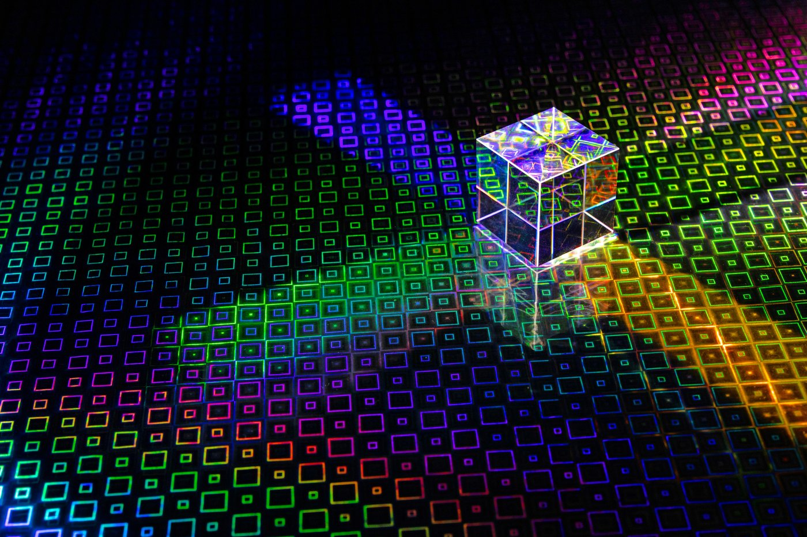

Superposition
Unlike a classical bit, which is always either 0 or 1, a qubit can hold a combination of both states at once. This lets a quantum computer explore many possible answers to a problem in parallel, instead of checking them one at a time.
Qubit Primer.
A plain-language introduction to qubits, superposition, and why this strange new kind of computing matters.
Quantum computers do not just run classical programs faster — they compute in a fundamentally different way. These three ideas are the foundation for almost everything else in the field.
Unlike a classical bit, which is always either 0 or 1, a qubit can hold a combination of both states at once. This lets a quantum computer explore many possible answers to a problem in parallel, instead of checking them one at a time.
When two qubits become entangled, measuring one instantly tells you something about the other, no matter how far apart they are. Entanglement is what lets quantum computers correlate information across many qubits at once.
A quantum algorithm is designed so that the probability waves for wrong answers cancel each other out, while the waves for the correct answer reinforce. Interference is how a quantum computer steers a fuzzy cloud of possibilities toward a useful result.

Today's quantum computers are still small and error-prone, but researchers are already testing them on problems that are painfully slow for classical machines: simulating new drug molecules and materials, optimizing complex logistics and financial portfolios, and searching unsorted data far faster than a classical computer could. No one expects quantum computers to replace laptops — the real promise is a specialized tool for a narrow, hard set of problems.
A quantum processor cannot run on its own. Every qubit needs a surrounding layer of classical control electronics, similar to the circuit board pictured here, to send precisely timed microwave pulses and read the results back out.
You do not need a physics degree to start experimenting. These beginner-friendly resources let you write and run real quantum programs in a browser:
The best way to understand a qubit is to control one yourself.